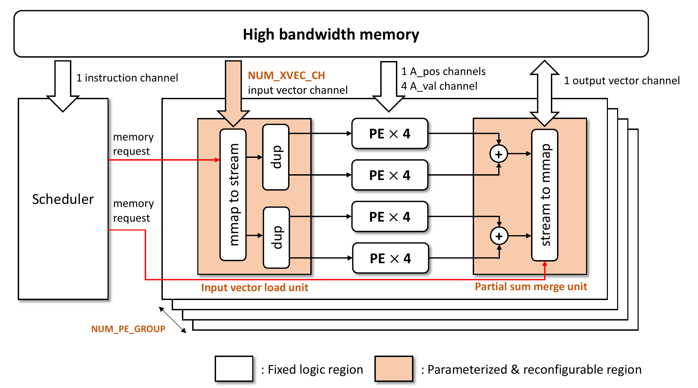
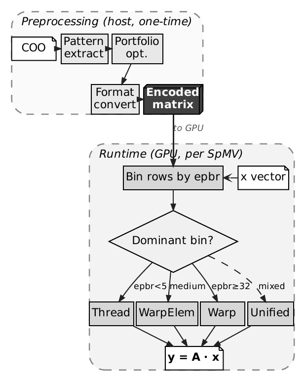
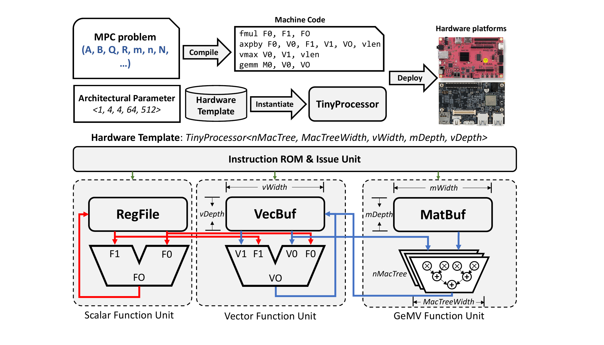

Academic Projects
This page collects the main academic projects from my Ph.D. research. The common theme is to exploit structure in sparse and optimization workloads by binding it to the right system layer: data format, GPU kernel, FPGA datapath, or generated model-specific circuit.
SPASM-FPGA
|
 |
SPASM-FPGA is a pattern-aware software-hardware co-design framework for sparse matrix-vector multiplication (SpMV) on FPGA. The project targets the central performance problem in SpMV: irregular sparse matrices generate low arithmetic intensity and scattered memory accesses, so simply adding more compute units does not translate into proportional speedup. The key idea is to discover recurring local sparse patterns during preprocessing and encode them as compact template instances. The encoded stream then drives a reconfigurable FPGA datapath, so the hardware sees a more regular and compact workload than conventional CSR/COO formats expose. |
Platform: Xilinx Alveo U280 FPGA with high-bandwidth memory.
Method: local pattern mining, flexible access pattern portfolio, compact stream encoding, workload scheduling, and reconfigurable VALU datapath.
Result: published at HPCA 2025; achieved 6.74x, 3.21x, and 2.81x geometric-mean speedups over HiSparse, Serpens_a16, and Serpens_a24, respectively, in the thesis evaluation.
Insight: many real sparse matrices, especially those from PDE-based simulation and structural mechanics, contain enough local pattern concentration to justify matrix-specific preprocessing.
SPASM-GPU
|
 |
SPASM-GPU extends the same pattern-aware representation to commodity GPUs. Unlike the FPGA version, the GPU implementation must work within SIMT execution, warp scheduling, cache behavior, and CUDA memory hierarchy constraints. The project develops a CSR-compatible packed representation, a greedy portfolio optimizer for choosing pattern templates, and a four-way adaptive kernel dispatcher that selects the best execution path for each matrix partition. |
Platform: CUDA GPUs, using the scalar CUDA-core execution path rather than specialized sparse tensor-core instructions.
Code:
 spasm-tools.
spasm-tools.Method: pattern extraction, template portfolio selection, format conversion, row binning, and adaptive dispatch among thread-, warp-element-, warp-, and unified-kernel paths.
Result: evaluated on 2,773 SuiteSparse matrices; achieved 4.21x geometric-mean speedup over cuSPARSE-CSR at fp32 with a 93% win rate.
Insight: a software-only representation can still capture structure that conventional CSR ignores, especially when metadata compression improves bandwidth efficiency.
ThunderKittens Pseudo-WGMMA Fork
|
This project is my modified fork of ThunderKittens, a CUDA kernel programming framework for writing high-performance tensor programs. My fork focuses on making the warpgroup-level programming interface more portable across GPU generations. I added pseudo-WGMMA support for SM120 and SM80 so kernels can use a WGMMA-like interface even when the target architecture does not provide native hardware WGMMA. This keeps source code close to the H100-style programming model while lowering it to architecture-available tensor-core paths. |
Code:
ThunderKittens fork, branch pseudo-wgmma.Core interface: include/ops/group/mma/warpgroup_pseudo.cuh.
SM120 tutorial: kernels/gemm/educational_sm120.
Result: on SM120, the educational GEMM path reaches near-cuBLAS performance in the local README numbers; for example, RTX 5090 level 09 reports 225.244 TFLOPs versus a 225.922 TFLOPs cuBLAS baseline, and RTX 5060 Ti level 09 reports 46.62 TFLOPs versus 46.44 TFLOPs cuBLAS.
Takeaway: the pseudo-WGMMA interface lets readers write kernels in a warpgroup-style API while still getting performance close to cuBLAS for the tutorial GEMM path.
MPC Solver Hardware Generation
|
 |
This project studies hardware generation for real-time model predictive control (MPC), especially for edge robotics platforms where control quality is limited by per-cycle computation budget. The target algorithm is a cached MPC solver in which most online computation is matrix-vector arithmetic. The framework generates FPGA accelerators from an MPC problem specification. It specializes the circuit using operation fusion and sparsity pruning: model-specific structural zeros from the robot dynamics are removed before hardware is generated. |
Platform: Xilinx Ultra96 edge FPGA platform.
Method: parameterized vector architecture, Python-based hardware generation, model-specific operation fusion, and pruning of physics-induced structural zeros.
Publication: ICFPT 2025, DOI 10.1109/ICFPT67023.2025.00047.
Result: achieved up to 9.73x speedup over an embedded ARM CPU baseline and 25.96% tracking-error reduction in quadrotor control.
Insight: when sparsity is known at design time, the compiler can remove zero-valued computation entirely from the circuit rather than merely compressing it in memory.
Asynchronous SNN on FPGA
This project explores an asynchronously triggered spiking neural network (SNN) accelerator on FPGA for event-based vision. The goal is to exploit the sparse and event-driven nature of vision sensor streams without forcing all computation into a globally clocked dense pipeline.
Platform: Xilinx Zynq UltraScale+ FPGA.
Method: asynchronous handshake protocol, reconfigurable RTL datapath, AXI-based system integration, and event-triggered computation.
Result: published at ICFPT 2023; achieved sub-1mW dynamic power while maintaining 95.76% accuracy in the reported evaluation.
Insight: for event-based vision, asynchronous triggering can better match the workload's temporal sparsity than a conventional always-clocked accelerator.